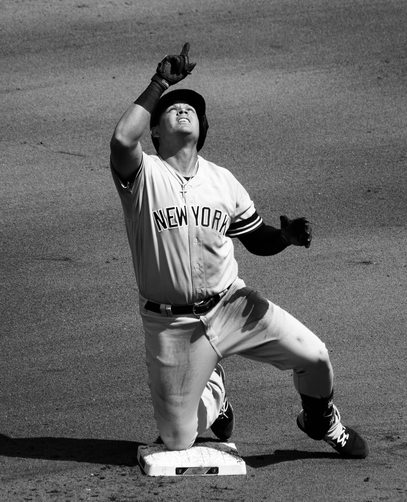

The 2017 Yankees featured a group of young players who became known as the "Baby Bombers". Among them were outfielder Aaron Judge, catcher Gary Sánchez, starting pitcher Luis Severino, and first baseman Greg Bird. Judge hit a league-leading 52 home runs, the most ever by a rookie; he was the AL MVP runner-up and won AL Rookie of the Year honors. New York earned a postseason berth and reached the ALDS by beating the Twins in the AL wild card game. The Indians gained a two-game lead in the ALDS, but the Yankees won three consecutive times to advance to the ALCS. Against the Astros, the Yankees lost in seven games. After 10 years as the team's manager, Girardi was replaced by former ALCS hero Aaron Boone. New York acquired outfielder Giancarlo Stanton, the 2017 NL MVP, in an offseason trade with the Marlins. Stanton had 38 of the 267 home runs hit by the Yankees in 2018, as the club set an MLB single-season record. They again qualified for the playoffs and made it to the ALDS, where they faced the Red Sox. The Yankees were defeated three games to one by their rivals, falling short of a return to the ALCS.
In 2019, the Yankees won 103 games and the AL East championship. Their superstars seemingly spent more time on the injured list than in the starting lineups, leading to the emergence of players like Gio Urshela and Gleyber Torres and a "Next Man Up" mentality. Role players and no-names powered the Yankees to their AL East title. With 306 home runs, they surpassed the previous season's record and were second in MLB behind the Twins, their opponents in the ALDS. After sweeping Minnesota, New York had another ALCS matchup with Houston. While down 3-2 in the series against the Astros, the Yankees scored two runs in dramatic fashion to tie Game 6 in the ninth inning. In the bottom of the ninth, a walk-off home run by José Altuve gave the Astros their third playoff elimination of the Yankees in five years. The 2010s became the first calendar decade since the 1910s in which the Yankees did not win a pennant.
As of 2019, the Yankees' 27 World Series championships are 16 more than the number won by the St. Louis Cardinals, who have the second-most titles among MLB teams. New York's championship total is the highest of any franchise in a major North American professional sports league; the National Hockey League's Montreal Canadiens are second behind the Yankees with 24 Stanley Cup wins. The 40 AL pennants won by the Yankees places them 17 in front of the Cardinals for the most won by an MLB team. The Giants and Dodgers are the only other clubs with 20 or more pennants. The Baseball Hall of Fame has inducted over 40 players and managers who have worn Yankees pinstripes. Forbes magazine has labeled the Yankees the most valuable team in baseball every year since 1998; the franchise was worth an estimated $4.6 billion in 2019.